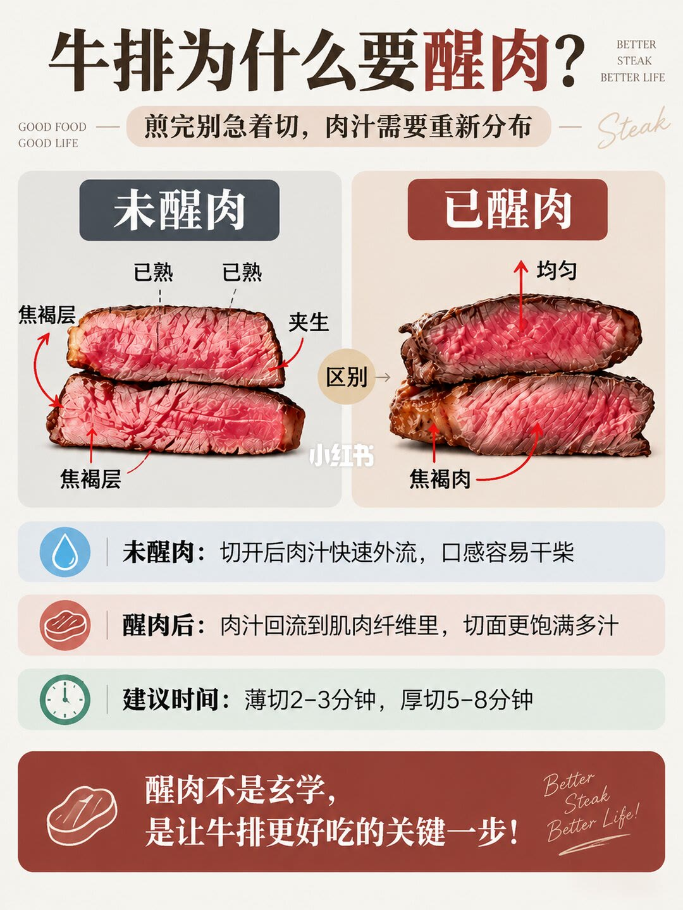
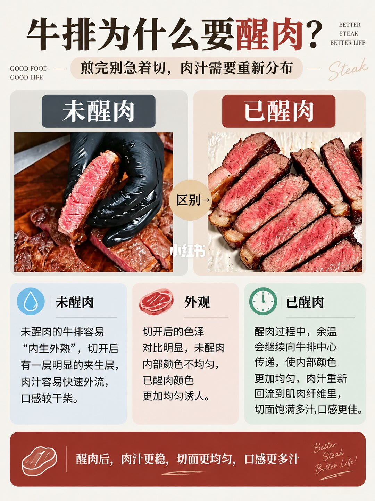
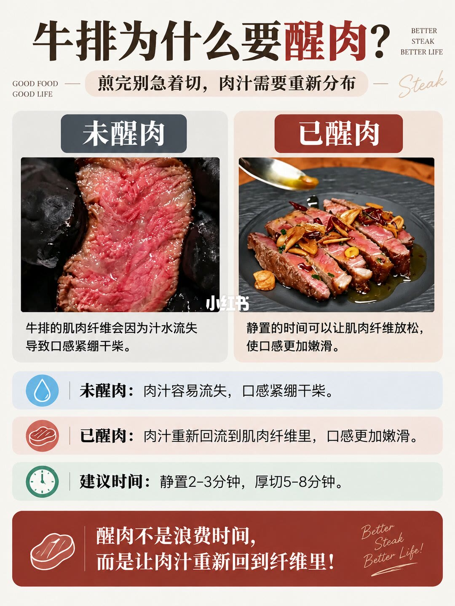

图文实录 · 小红书 · 原牧鲜生
⚠️别再切硬牛排！醒肉才是好牛排的关键～
三张图都在回答同一句：煎完别急着切。图上把未醒肉写成切面夹生、汁水外流、口感干柴，把已醒肉写成颜色更匀、汁水回到纤维里。分钟数只出现在第 1 页和第 3 页，两页的前半句并不相同。
1/3
切面对照，外加两档时间

页眉大字是「牛排为什么要醒肉？」，灰底胶囊写「煎完别急着切，肉汁需要重新分布」。左右角有英文装饰字，中间有小红书水印。主体是两叠切片：左边灰标「未醒肉」，箭头标「焦褐层」「已熟」「夹生」，切面中心明显更红；右边褐标「已醒肉」，箭头标「均匀」和「焦褐肉」，粉色从边缘到中心更接近。两图之间有圆标「区别」。
下面三条横栏。水滴栏：「未醒肉：切开后肉汁快速外流，口感容易干柴」。牛排图标栏：「醒肉后：肉汁回流到肌肉纤维里，切面更饱满多汁」。时钟栏：「建议时间：薄切2-3分钟，厚切5-8分钟」。底栏：「醒肉不是玄学，是让牛排更好吃的关键一步！」
2/3
汁水、色泽、余温，这页没有分钟

页眉与第 1 页相同。对比照片换了：左边黑手套捏着一片刚切开的牛排，木砧板上有明显红色液体；右边几片牛排排在浅色盘上，切面偏粉，盘面几乎没有积汁。熟度具体是几分，图上没有写，无法确认。
照片下是三列。未醒肉：「未醒肉的牛排容易『内生外熟』，切开后有一层明显的夹生层，肉汁容易快速外流，口感较干柴。」外观：「切开后的色泽对比明显，未醒肉内部颜色不均匀，已醒肉颜色更加均匀诱人。」已醒肉：「醒肉过程中，余温会继续向牛排中心传递，使内部颜色更加均匀，肉汁重新回流到肌肉纤维里，切面饱满多汁，口感更佳。」底栏收成「醒肉后，肉汁更稳，切面更均匀，口感更多汁」。这一页没有时钟，也没有分钟数。
3/3
纤维松紧，时间改写成静置

页眉仍是同一句。左边灰标「未醒肉」，是切面特写，纤维清楚、表面湿，图注：「牛排的肌肉纤维会因为汁水流失导致口感紧绷干柴。」右边褐标「已醒肉」，切片装盘，上面有金黄蒜片和干辣椒，图注：「静置的时间可以让肌肉纤维放松，使口感更加嫩滑。」蒜片和辣椒是摆盘，图上没有写它们和醒肉有关。
三条横栏。未醒肉：「肉汁容易流失，口感紧绷干柴。」已醒肉：「肉汁重新回流到肌肉纤维里，口感更加嫩滑。」建议时间：「静置2-3分钟，厚切5-8分钟。」底栏：「醒肉不是浪费时间，而是让肉汁重新回到纤维里！」
汇总
先静置再切，分钟只按图上的两页
结论。图上的做法是煎完先放着再切。未醒肉被写成外熟里夹生、切开后汁水外流、口感干柴或紧绷；已醒肉被写成余温继续进到中心、肉汁回到纤维、切面更匀、口感更嫩。第 1 页把时间写成薄切 2–3 分钟、厚切 5–8 分钟；第 3 页写成静置 2–3 分钟、厚切 5–8 分钟。第 2 页没有分钟。
支撑页。切面标注和「薄切 / 厚切」在第 1 页。砧板汁水和「内生外熟」、色泽、余温在第 2 页。纤维紧绷与放松，以及「静置 2–3 分钟」在第 3 页。
边界。说明文写的是关火静置 3–8 分钟、每 1 厘米醒 2 分钟、3 厘米约 6 分钟，以及放网架、不要闷在盘子里。三张图都没有这些句子，分钟以图为准。第 1 页的「薄切 2–3 分钟」和第 3 页的「静置 2–3 分钟」不是同一句，不能并成一条规则。图上没有部位、火力、几分熟，也没有说明静置时要不要盖上。照片里的红液体是肉汁还是血水，图上没有区分。